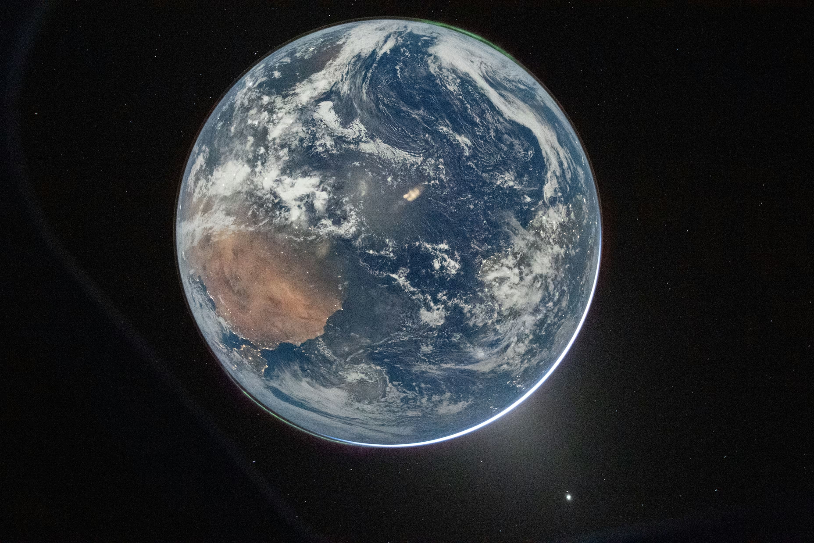
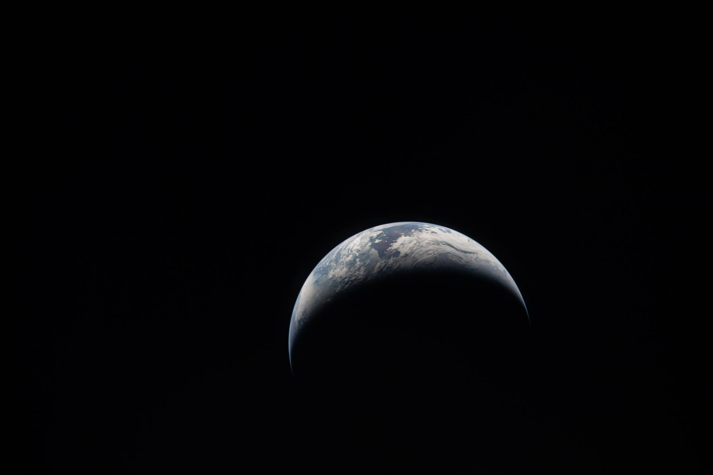

<!doctype html>
<html lang="en">
<head>
<meta charset="utf-8">
<meta name="viewport" content="width=device-width,initial-scale=1">
<title>Puniverse — B2 v2 · Eclipse + Crescent</title>
<link href="https://fonts.googleapis.com/css2?family=Inter:wght@400;500;600;700;800;900&family=Instrument+Serif:ital@0;1&family=JetBrains+Mono:wght@400;500&display=swap" rel="stylesheet">
<script src="https://unpkg.com/react@18.3.1/umd/react.development.js" integrity="sha384-hD6/rw4ppMLGNu3tX5cjIb+uRZ7UkRJ6BPkLpg4hAu/6onKUg4lLsHAs9EBPT82L" crossorigin="anonymous"></script>
<script src="https://unpkg.com/react-dom@18.3.1/umd/react-dom.development.js" integrity="sha384-u6aeetuaXnQ38mYT8rp6sbXaQe3NL9t+IBXmnYxwkUI2Hw4bsp2Wvmx4yRQF1uAm" crossorigin="anonymous"></script>
<script src="https://unpkg.com/@babel/standalone@7.29.0/babel.min.js" integrity="sha384-m08KidiNqLdpJqLq95G/LEi8Qvjl/xUYll3QILypMoQ65QorJ9Lvtp2RXYGBFj1y" crossorigin="anonymous"></script>
<style>
  body{background:#0a0a0a;font-family:Inter,system-ui;-webkit-font-smoothing:antialiased;margin:0}
  .font-display{font-family:"Instrument Serif",serif}
  .font-mono{font-family:"JetBrains Mono",ui-monospace,monospace}
  .stage-canvas{flex:1;display:flex;align-items:center;justify-content:center;padding:36px;min-height:280px}
  .stage-meta{padding:14px 18px;border-top:1px solid rgba(255,255,255,.10);background:#0a0a0a;color:#a1a1aa;font-size:11px;font-family:"JetBrains Mono",ui-monospace,monospace;display:flex;justify-content:space-between;gap:12px;flex-wrap:wrap}
  .stage-meta .name{color:#fff;font-weight:600}
  .stage-meta .tag{color:#71717a}
  .stage-meta.light{background:#fafafa;border-top:1px solid rgba(0,0,0,.08);color:#525252}
  .stage-meta.light .name{color:#000}
  .stage-meta.light .tag{color:#a3a3a3}
  .micro{font-size:10px;letter-spacing:.3em;text-transform:uppercase;color:#71717a;font-weight:700}
</style>
</head>
<body>
<script type="text/babel" src="design-canvas.jsx"></script>
<script type="text/babel">
const { useState } = React;

/* Shared gradient defs.
   The big change vs v1: the Earth body is DARK (eclipse-style).
   Light comes from a properly-modeled rim — a thin atmospheric halo
   that sits OUTSIDE the planet, brightest where the sun would be. */
function Defs({ id, sunAngle = 320 /* deg, where the sun is */ }) {
  // Convert sun angle into gradient cx/cy on a 0..1 unit circle around (.5,.5)
  const rad = (sunAngle * Math.PI) / 180;
  const cx = 0.5 + Math.cos(rad) * 0.55;
  const cy = 0.5 - Math.sin(rad) * 0.55;
  return (
    <defs>
      {/* Eclipse Earth body — dark blue with subtle land-mass tint, NOT bright */}
      <radialGradient id={`body-${id}`} cx=".4" cy=".35" r=".75">
        <stop offset="0%" stopColor="#1e3a5f"/>
        <stop offset="55%" stopColor="#0c1a35"/>
        <stop offset="100%" stopColor="#050a18"/>
      </radialGradient>
      {/* The rim-light: brightest at sunAngle, fades around the limb */}
      <radialGradient id={`rim-${id}`} cx={cx} cy={cy} r=".85">
        <stop offset="0%" stopColor="#ffffff" stopOpacity="0"/>
        <stop offset="78%" stopColor="#ffffff" stopOpacity="0"/>
        <stop offset="92%" stopColor="#dbeafe" stopOpacity=".55"/>
        <stop offset="98%" stopColor="#ffffff" stopOpacity=".95"/>
        <stop offset="100%" stopColor="#ffffff" stopOpacity="0"/>
      </radialGradient>
      {/* Aurora — faint teal/green glow, opposite-ish side */}
      <radialGradient id={`aurora-${id}`} cx=".25" cy=".15" r=".5">
        <stop offset="0%" stopColor="#5eead4" stopOpacity="0"/>
        <stop offset="80%" stopColor="#5eead4" stopOpacity="0"/>
        <stop offset="95%" stopColor="#86efac" stopOpacity=".5"/>
        <stop offset="100%" stopColor="#5eead4" stopOpacity="0"/>
      </radialGradient>
      {/* Light-mode body — saturated blue, no near-white */}
      <radialGradient id={`body-light-${id}`} cx=".4" cy=".35" r=".75">
        <stop offset="0%" stopColor="#3b82f6"/>
        <stop offset="60%" stopColor="#1e3a8a"/>
        <stop offset="100%" stopColor="#0b1530"/>
      </radialGradient>
    </defs>
  );
}

/* Eclipse Earth — replaces the simple gradient orb.
   Dark body + atmospheric rim light + (optional) aurora glow. */
function EclipseEarth({ cx, cy, r, dark = true, id, sunAngle = 320, aurora = false, lightLand = false }) {
  return (
    <g>
      <circle cx={cx} cy={cy} r={r} fill={dark ? `url(#body-${id})` : `url(#body-light-${id})`}/>
      {/* faint continent silhouette — just a soft dark splotch, abstract */}
      {lightLand && dark && (
        <g opacity=".35">
          <ellipse cx={cx - r*.25} cy={cy + r*.05} rx={r*.18} ry={r*.12} fill="#3a2818"/>
        </g>
      )}
      {/* aurora — only on dark mode */}
      {aurora && dark && <circle cx={cx} cy={cy} r={r+1} fill={`url(#aurora-${id})`}/>}
      {/* the rim light — outside the planet body, hairline halo */}
      <circle cx={cx} cy={cy} r={r+1.5} fill="none" stroke={dark ? "#dbeafe" : "#3b82f6"}
              strokeWidth=".6" opacity={dark ? .35 : .25}/>
      <circle cx={cx} cy={cy} r={r} fill={`url(#rim-${id})`}/>
    </g>
  );
}

/* Crescent Earth — true crescent geometry (image 2):
   thin sunlit sliver on one side, rest of disc in deep shadow.
   Built with a mask: lit disc minus a slightly-offset shadow disc. */
function CrescentEarth({ cx, cy, r, dark = true, id, offset = 0.55 /* fraction of r */ }) {
  const dx = r * offset;
  return (
    <g>
      {/* full dark body */}
      <circle cx={cx} cy={cy} r={r} fill={dark ? `url(#body-${id})` : `url(#body-light-${id})`} opacity={dark? .9 : .35}/>
      {/* the lit crescent */}
      <mask id={`cres-${id}`}>
        <rect x="0" y="0" width="240" height="240" fill="#000"/>
        <circle cx={cx} cy={cy} r={r} fill="#fff"/>
        <circle cx={cx - dx} cy={cy - dx*.3} r={r} fill="#000"/>
      </mask>
      <g mask={`url(#cres-${id})`}>
        <circle cx={cx} cy={cy} r={r} fill={dark ? "#dbeafe" : "#1e3a8a"}/>
        {/* subtle blue shading on the lit side */}
        <circle cx={cx + r*.4} cy={cy + r*.2} r={r*.7} fill={dark ? "#60a5fa" : "#0b1530"} opacity=".5"/>
      </g>
      {/* outer atmospheric hairline along the lit limb */}
      <circle cx={cx} cy={cy} r={r+1.5} fill="none" stroke={dark ? "#dbeafe" : "#1e3a8a"}
              strokeWidth=".5" opacity={dark? .3 : .2}/>
    </g>
  );
}

/* ============================================================
   B2.1 v2 — REFINED · eclipse Earth
   Thin stem (18) + light ring (16). Earth replaced with eclipse model.
============================================================ */
const B2_1v2 = ({ size = 220, dark = true }) => {
  const fg = dark ? "#fff" : "#0a0a0a";
  return (
    <svg viewBox="0 0 240 240" width={size} height={size} aria-hidden>
      <Defs id="r1" sunAngle={310}/>
      <rect x="64" y="40" width="18" height="160" rx="4" fill={fg}/>
      <circle cx="140" cy="92" r="48" fill="none" stroke={fg} strokeWidth="16"/>
      <EclipseEarth cx={140} cy={92} r={24} dark={dark} id="r1" sunAngle={310}/>
    </svg>
  );
};

/* ============================================================
   B2.3 v2 — SOFT CAPS · eclipse Earth
   Rounded stem terminals, baseline weights. Eclipse rim light.
============================================================ */
const B2_3v2 = ({ size = 220, dark = true }) => {
  const fg = dark ? "#fff" : "#0a0a0a";
  return (
    <svg viewBox="0 0 240 240" width={size} height={size} aria-hidden>
      <Defs id="r3" sunAngle={310}/>
      <rect x="64" y="40" width="22" height="160" rx="11" fill={fg}/>
      <circle cx="140" cy="92" r="48" fill="none" stroke={fg} strokeWidth="22" strokeLinecap="round"/>
      <EclipseEarth cx={140} cy={92} r={22} dark={dark} id="r3" sunAngle={310}/>
    </svg>
  );
};

/* ============================================================
   B2.4 v2 — AURORA · eclipse Earth with two aurora glows
   Carries the science-photo cue: green/teal aurora + atmosphere ring.
============================================================ */
const B2_4v2 = ({ size = 220, dark = true }) => {
  const fg = dark ? "#fff" : "#0a0a0a";
  return (
    <svg viewBox="0 0 240 240" width={size} height={size} aria-hidden>
      <Defs id="r4" sunAngle={320}/>
      {/* second aurora gradient on opposite pole */}
      <defs>
        <radialGradient id="aurora2-r4" cx=".75" cy=".88" r=".5">
          <stop offset="0%" stopColor="#5eead4" stopOpacity="0"/>
          <stop offset="80%" stopColor="#5eead4" stopOpacity="0"/>
          <stop offset="95%" stopColor="#86efac" stopOpacity=".45"/>
          <stop offset="100%" stopColor="#5eead4" stopOpacity="0"/>
        </radialGradient>
      </defs>
      <rect x="64" y="40" width="22" height="160" rx="4" fill={fg}/>
      <circle cx="140" cy="92" r="48" fill="none" stroke={fg} strokeWidth="22"/>
      <EclipseEarth cx={140} cy={92} r={22} dark={dark} id="r4" sunAngle={320} aurora lightLand/>
      {/* second aurora at bottom-right pole */}
      {dark && <circle cx="140" cy="92" r="23" fill="url(#aurora2-r4)"/>}
    </svg>
  );
};

/* ============================================================
   B2.6 v2 — SATELLITE · eclipse Earth + tiny lit moon
   Moon carries its own rim light, sits on the orbit ring at 2 o'clock.
============================================================ */
const B2_6v2 = ({ size = 220, dark = true }) => {
  const fg = dark ? "#fff" : "#0a0a0a";
  return (
    <svg viewBox="0 0 240 240" width={size} height={size} aria-hidden>
      <Defs id="r6" sunAngle={310}/>
      <defs>
        <radialGradient id="moon-r6" cx=".3" cy=".3" r=".8">
          <stop offset="0%" stopColor="#d4d4d8"/>
          <stop offset="100%" stopColor="#3f3f46"/>
        </radialGradient>
      </defs>
      <rect x="64" y="40" width="22" height="160" rx="4" fill={fg}/>
      <circle cx="140" cy="92" r="48" fill="none" stroke={fg} strokeWidth="22"/>
      <EclipseEarth cx={140} cy={92} r={22} dark={dark} id="r6" sunAngle={310}/>
      {/* satellite — small moon with rim */}
      <circle cx="183" cy="68" r="6" fill={dark ? "url(#moon-r6)" : fg}/>
      {dark && <circle cx="183" cy="68" r="6.8" fill="none" stroke="#dbeafe" strokeWidth=".5" opacity=".5"/>}
    </svg>
  );
};

/* ============================================================
   B2.NEW — TRUE CRESCENT · matches image 2 exactly
   Real crescent geometry; the lit sliver hugs the bottom-right curve.
============================================================ */
const B2_Crescent = ({ size = 220, dark = true }) => {
  const fg = dark ? "#fff" : "#0a0a0a";
  return (
    <svg viewBox="0 0 240 240" width={size} height={size} aria-hidden>
      <Defs id="rc" sunAngle={310}/>
      <rect x="64" y="40" width="22" height="160" rx="4" fill={fg}/>
      <circle cx="140" cy="92" r="48" fill="none" stroke={fg} strokeWidth="22"/>
      <CrescentEarth cx={140} cy={92} r={22} dark={dark} id="rc" offset={.55}/>
    </svg>
  );
};

function Stage({ dark=true, children, label, spec }) {
  return (
    <div style={{display:'flex',flexDirection:'column',height:'100%'}}>
      <div className="stage-canvas" style={{background: dark? '#050505':'#ffffff'}}>{children}</div>
      <div className={`stage-meta ${dark?'':'light'}`}>
        <span className="name">{label}</span>
        <span className="tag">{spec}</span>
      </div>
    </div>
  );
}

function PhotoStage({ children, label, spec, src }) {
  return (
    <div style={{display:'flex',flexDirection:'column',height:'100%'}}>
      <div className="stage-canvas" style={{background:`#000 url(${src}) center/cover`,position:'relative'}}>
        <div style={{position:'absolute',inset:0,background:'rgba(0,0,0,.55)'}}/>
        <div style={{position:'relative',zIndex:1}}>{children}</div>
      </div>
      <div className="stage-meta">
        <span className="name">{label}</span>
        <span className="tag">{spec}</span>
      </div>
    </div>
  );
}

function Lockup({ glyph, dark=true, size=86 }) {
  return (
    <div style={{display:'flex',alignItems:'center',gap:14}}>
      <div style={{width:size,height:size,display:'flex',alignItems:'center',justifyContent:'center'}}>
        {React.cloneElement(glyph, {size, dark})}
      </div>
      <span style={{fontWeight:900,letterSpacing:'-.01em',fontSize:size*.30,color:dark?'#fff':'#0a0a0a'}}>PUNIVERSE</span>
    </div>
  );
}

function App() {
  const variants = [
    {id:'r1', name:'B2.1 · Refined', el: B2_1v2, photo:'assets/eclipse-earth.jpg', note:'Eclipse-style Earth — dark body, thin atmospheric rim brightest at the sun. Stem 18 + ring 16; the lighter weights let the rim halo breathe.'},
    {id:'r3', name:'B2.3 · Soft caps', el: B2_3v2, photo:'assets/eclipse-earth.jpg', note:'Rounded stem + ring caps. Same eclipse Earth; the rounded terminals echo the soft glow of the atmosphere.'},
    {id:'r4', name:'B2.4 · Aurora', el: B2_4v2, photo:'assets/eclipse-earth.jpg', note:'Carries both auroras (top-right teal, bottom-right green) plus a faint continent silhouette. The most photo-faithful.'},
    {id:'r6', name:'B2.6 · Satellite', el: B2_6v2, photo:'assets/eclipse-earth.jpg', note:'Eclipse Earth + tiny gradient-shaded moon at 2 o\'clock with its own rim hairline. Two-body story restored.'},
    {id:'rc', name:'B2.NEW · True crescent', el: B2_Crescent, photo:'assets/crescent-earth.jpg', note:'Real crescent geometry per image 2 — sunlit sliver on the bottom-right curve, deep shadow elsewhere. Most cinematic at large size.'},
  ];

  return (
    <DesignCanvas>
      <DCSection id="brief" title="01 · Eclipse + Crescent · brief">
        <DCArtboard id="brief-card" label="Brief" width={1200} height={420}>
          <div style={{padding:32,background:'#050505',height:'100%',color:'#a1a1aa',fontFamily:'Inter',display:'grid',gridTemplateColumns:'1.3fr 1fr 1fr',gap:24,boxSizing:'border-box'}}>
            <div style={{display:'flex',flexDirection:'column',gap:14}}>
              <div style={{fontSize:11,letterSpacing:'.3em',textTransform:'uppercase',color:'#bfdbfe',fontWeight:700}}>§ B2 · v2</div>
              <h1 className="font-display" style={{fontStyle:'italic',color:'#fff',fontSize:40,lineHeight:1.25,margin:'0 0 6px 0',letterSpacing:'-0.02em'}}>
                Dark Earth, lit edge.
              </h1>
              <p style={{fontSize:13.5,lineHeight:1.6,margin:0}}>
                The first set was too bright. The reference photos show Earth as a <em>dark</em> body — light only kisses the atmospheric rim where the sun grazes the limb. Here are B2.1, B2.3, B2.4, B2.6 redrawn that way, plus a true-crescent variant matching image 2 exactly.
              </p>
              <div className="font-mono" style={{fontSize:11,color:'#71717a',marginTop:6,lineHeight:1.7}}>
                <div><span style={{color:'#bfdbfe'}}>body ←</span> #1e3a5f → #0c1a35 → #050a18</div>
                <div><span style={{color:'#bfdbfe'}}>rim ←</span> #dbeafe → #ffffff @ 92–98%</div>
                <div><span style={{color:'#86efac'}}>aurora ←</span> #5eead4 / #86efac</div>
              </div>
            </div>
            <div style={{borderRadius:10,overflow:'hidden',border:'1px solid rgba(255,255,255,.10)'}}>
              
            </div>
            <div style={{borderRadius:10,overflow:'hidden',border:'1px solid rgba(255,255,255,.10)'}}>
              
            </div>
          </div>
        </DCArtboard>
      </DCSection>

      {variants.map(v => {
        const G = v.el;
        return (
          <DCSection key={v.id} id={v.id} title={v.name}>
            <DCArtboard id={`${v.id}-dark`} label="Primary · dark" width={420} height={420}>
              <Stage dark label={v.name} spec="primary"><G size={220} dark/></Stage>
            </DCArtboard>
            <DCArtboard id={`${v.id}-photo`} label="In scene · photo backdrop" width={420} height={420}>
              <PhotoStage label={v.name} spec="reference scene" src={v.photo}>
                <G size={200} dark/>
              </PhotoStage>
            </DCArtboard>
            <DCArtboard id={`${v.id}-light`} label="Inverse · light" width={420} height={420}>
              <Stage dark={false} label={v.name} spec="inverse"><G size={220} dark={false}/></Stage>
            </DCArtboard>
            <DCArtboard id={`${v.id}-lockup`} label="Lockup" width={520} height={300}>
              <Stage dark label={`${v.name} · lockup`} spec="horizontal">
                <Lockup glyph={<G/>} dark size={96}/>
              </Stage>
            </DCArtboard>
            <DCArtboard id={`${v.id}-scale`} label="Scale test · 96/64/32/16" width={520} height={300}>
              <Stage dark label="96 · 64 · 32 · 16" spec="favicon scale">
                <div style={{display:'flex',gap:24,alignItems:'flex-end'}}>
                  <G size={96} dark/><G size={64} dark/><G size={32} dark/><G size={16} dark/>
                </div>
              </Stage>
            </DCArtboard>
            <DCArtboard id={`${v.id}-note`} label="Note" width={420} height={300}>
              <div style={{padding:24,background:'#050505',color:'#a1a1aa',fontSize:13,lineHeight:1.6,height:'100%',boxSizing:'border-box',fontFamily:'Inter',display:'flex',flexDirection:'column',gap:10}}>
                <div style={{color:'#bfdbfe',fontSize:10,letterSpacing:'.3em',textTransform:'uppercase',fontWeight:700}}>Rationale</div>
                <p style={{margin:0}}>{v.note}</p>
              </div>
            </DCArtboard>
          </DCSection>
        );
      })}

      <DCSection id="row" title="07 · Side-by-side comparison">
        <DCArtboard id="row-dark" label="All v2 variants · dark" width={1280} height={260}>
          <div style={{display:'flex',background:'#050505',height:'100%',alignItems:'center',justifyContent:'space-around',padding:'20px 30px'}}>
            {variants.map(v => {
              const G = v.el;
              return (
                <div key={v.id} style={{display:'flex',flexDirection:'column',alignItems:'center',gap:12}}>
                  <G size={140} dark/>
                  <span className="micro">{v.name.split('·')[0].trim()}</span>
                </div>
              );
            })}
          </div>
        </DCArtboard>
        <DCArtboard id="row-large" label="Hero scale · 280px" width={1280} height={420}>
          <div style={{display:'flex',background:'#050505',height:'100%',alignItems:'center',justifyContent:'space-around',padding:'30px'}}>
            {variants.map(v => {
              const G = v.el;
              return <G key={v.id} size={280} dark/>;
            })}
          </div>
        </DCArtboard>
      </DCSection>
    </DesignCanvas>
  );
}

ReactDOM.createRoot(document.getElementById('root') || (() => {
  const r = document.createElement('div'); r.id='root'; document.body.appendChild(r); return r;
})()).render(<App/>);
</script>
</body>
</html>
